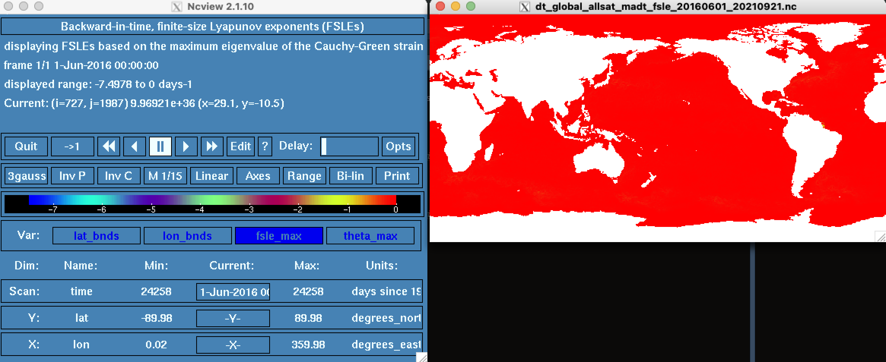
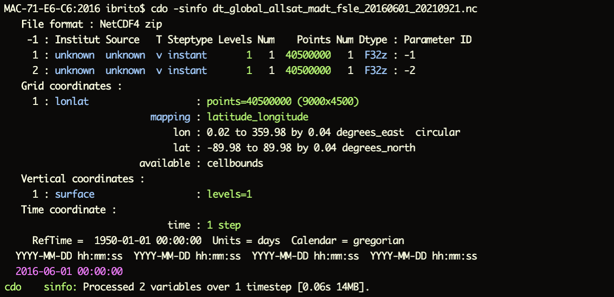
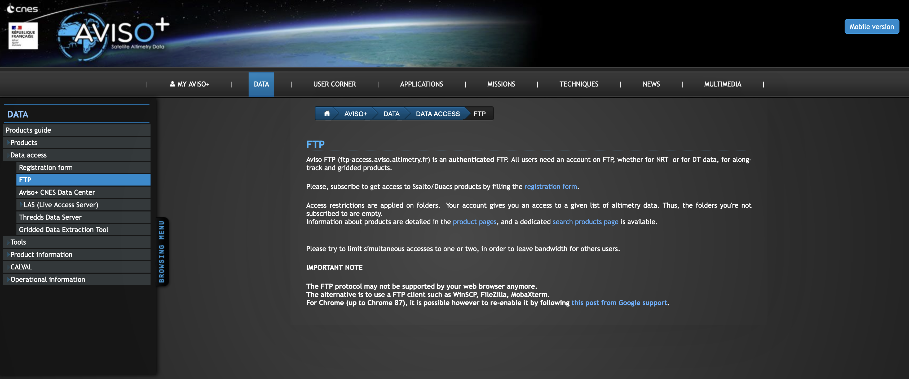
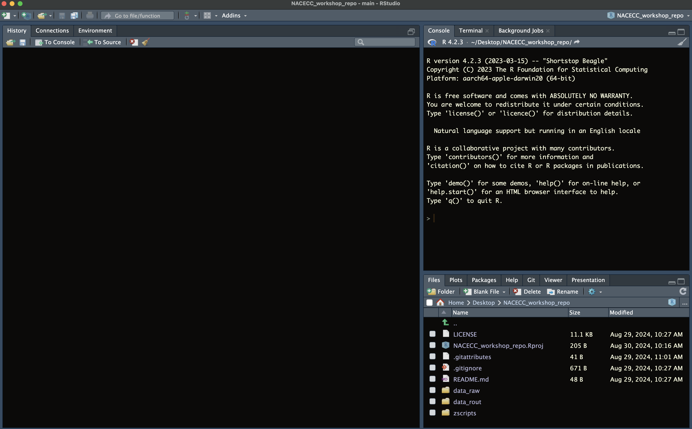
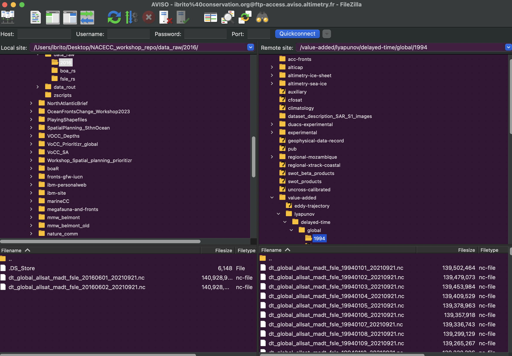
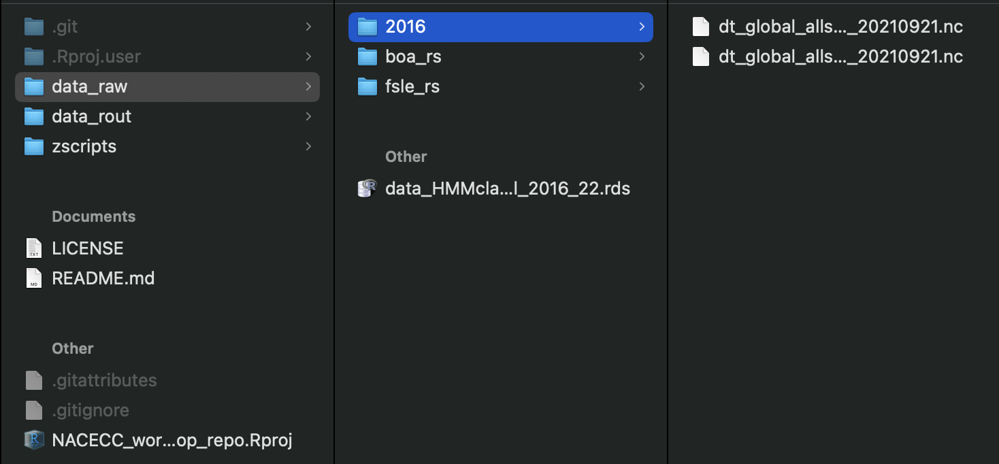
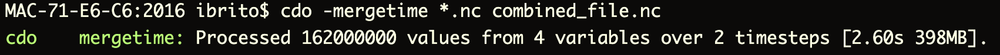
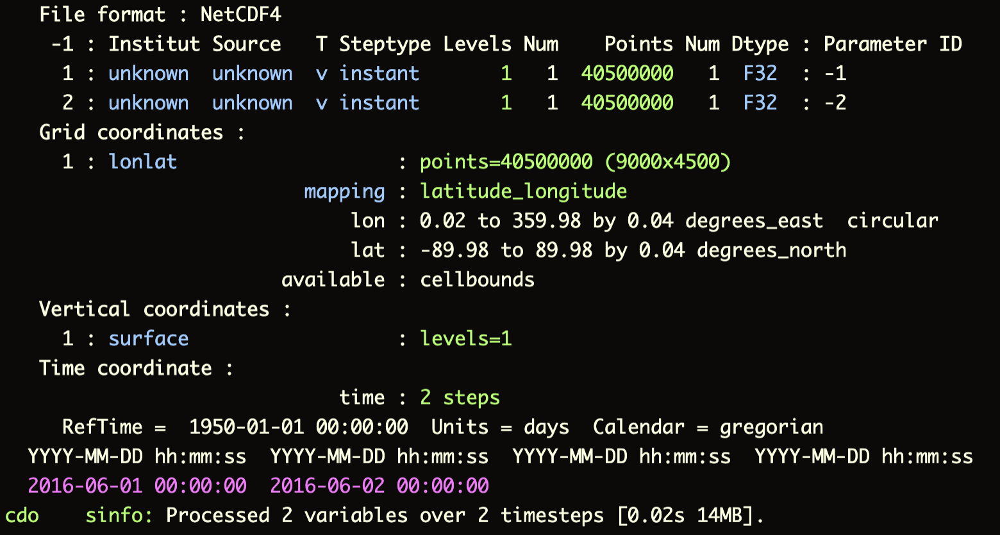

sudo port install cdo5 Getting Started with Climate Data
This sections introduces you to the basics of using Climate Data Operators (CDO) to efficiently manipulate and analyze netCDF files, which are commonly used for storing climate data. CDO is a powerful command-line toolset designed to handle several climate data formats, allowing you to perform tasks such as data conversion, averaging, regridding, etc.
More info go directly to the Max Planck Institute CDO website
5.1 CDO Installation Process
5.1.1 MacOS
Follow the instruction and downloaded MacPorts. MacPorts is an open-source community initiative to design an easy-to-use system for compiling, installing, and upgrading the command-line on the Mac operating system.
MacPorts website MacPorts download
Setup
CDO in MacOS (Updated Instructions)
1. Install CDO:
- After MacPorts installation, open the
Terminaland type
- Enter your password
2. Verify the Installation:
- To verify that
CDOis installed, type:
cdo --versionThis command will display the installed version of CDO
Homebrew Alternative
You can use Homebrew, another popular package manager for macOS. To install CDO with Homebrew:
brew install cdo5.1.2 Windows
In the current Windows version(s) Microsoft includes an Ubuntu 16.04 LTS embedded Linux. This environment offers a clean integration with the windows file systems and and the opportunity to install CDO via the native package manager of Ubuntu.
Setup
CDO in Windows (Updated Instructions)
1. Enable Windows Subsystem for Linux (WSL):
- Open
PowerShellas Administrator and run:
wsl --install- This command installs the
Windows SubsystemforLinuxalong with the latestUbuntudistribution available from theMicrosoft Store. If you already haveWSLinstalled but want to upgrade or change yourLinuxdistribution, you can manually select it from theMicrosoft Store.
2. Install Ubuntu Distribution:
- Go to the
Microsoft Storeand search forUbuntu - Install the latest version of
Ubuntu(e.g.,Ubuntu 20.04 LTSorUbuntu 22.04 LTS)
3. Open the Ubuntu Terminal:
- Once installed, open the
Ubuntuterminal from the Start menu
4. Update and Install CDO:
- In the
Ubuntuterminal, update your package list:
sudo apt update- Install
CDOusing the package manager:
sudo apt install cdo- Enter your password when prompted
5. Verify the Installation:
- To verify that
CDOis installed, type:
cdo --versionThis command will display the installed version of CDO
Important
Windows Subsystem for Linux 2provides a fullLinuxkernel and better performance. If you’re using an older version, you might want to upgrade toWSL 2by following instructions on the WSL 2 documentation pageThe
Ubuntuterminal has seamless access to yourWindowsfile system, so you can useCDOon files stored on your Windows drives directly
5.2 ncview: a netCDF visual browser
ncview is a fast and user-friendly visual browser for exploring netCDF files. Mainly designed for Linux and macOS, ncview provides an intuitive interface to quickly view and analyze the contents of any netCDF file, making it a convenient tool for data exploration and preliminary analysis.
installing
ncview
1. Open the Terminal and type:
sudo port install ncview2. Verify the Installation:
- To verify that
ncviewis installed, type:
ncview --versionThis command will display the installed version of ncview
ncview for Windows?
ncview is designed for Unix-like environments (Linux and macOS). However, the installation can be achieved by using Windows Subsystem for Linux (WSL):
1. Install Windows Subsystem for Linux (WSL):
- Open
PowerShellas Administrator and run:
wsl --install- This command installs
WSLalong with a defaultLinuxdistribution, such asUbuntu.If you already haveWSL, make sure it is set toversion 2by running:
wsl --set-default-version 22. Install Packages:
- Open the
Ubuntuterminal (or your chosenLinuxdistribution) and update your package list:
sudo apt update- Install the required dependencies for
ncview:
sudo apt install ncview3. Verify the Installation:
ncview- This should start
ncviewif the installation was successful
4. X server (VcXsrv) for ncview
- Download and install
VcXsrvfrom official GitHub releases page - Launch
VcXsrvafter installation - Set the DISPLAY Environment Variable in
WSL
export DISPLAY=$(grep nameserver /etc/resolv.conf | awk '{print $2}'):0.05.3 Working with CDO and ncview
For the purpose of this workshop and to demonstrate how to use CDO (Climate Data Operators) and ncview, I have included two netCDF files of dynamical fronts (i.e., FSLE - Finite Size Lyapunov Exponent) in the workshop repository you have already cloned. These files are located in the data_raw/2016 directory.
To work with CDO and ncview, you’ll need to use the terminal command line. Open the Ubuntu app in Windows or the Terminal on macOS.
CDO and ncview from the terminal command line
1.1 Data Directory
- In your command line, type:
cd /Users/ibrito/Desktop/NACECC_workshop/data_raw/2016/
# Navigate to the directory where you have stored the workshop repository
# Note: The path below is specific to my local computer. Please replace it with your own directory path- This command sets
NACECC_workshopas your primary working directory
1.2 Windows Users
- If your workshop repository is located on the
Desktop, the path should be within the/mnt/c/Users/YourUsername/Desktop/directory
cd /mnt/c/Users/YourUsername/Desktop/NACECC_workshop/data_raw/2016/
# Replace YourUsername with your actual Windows username.2. Viewing Data with ncview
- Check if your data file is in the directory by listing the files:
ls -l
# This command will display the contents of the data directory- To quickly view the
netCDFfile usingncview, type:
ncview dt_global_allsat_madt_fsle_20160601_20210921.nc
- In
Windowsremember to run first:
export DISPLAY=$(grep nameserver /etc/resolv.conf | awk '{print $2}'):0.0ncview dt_global_allsat_madt_fsle_20160601_20210921.nc3. File Details with CDO
- To inspect the metadata and structure of the
netCDFfile usingCDO, type:
cdo -sinfo dt_global_allsat_madt_fsle_20160601_20210921.nc
# This command provides detailed information about the file, such as variable names, dimensions, and attributes.
The model details are:
- Horizontal component: resolution 9000x4500 (~4km)
- Vertical component: 1 level (i.e., surface)
- Time component: 1 step
4. Check variable(s) name
- To get the variable names from a
netCDFfile usingCDO, you can use theshownamefunction:
cdo showname dt_global_allsat_madt_fsle_20160601_20210921.ncThe model variables are: fsle_max theta_max
Warning
X ServerforncviewonWindows: If you’re usingncviewonWindows, ensure you have anX server(likeVcXsrvorXming) running to properly display the graphical interface- Error Handling: If you encounter any errors, double-check that
CDOandncvieware correctly installed and that you are using the correct file paths
5.4 Ocean Front dataset: AVISO product
For the primary purpose of this workshop, we will use AVISO products, primarily focusing on ocean fronts. AVISO is the French Active Archive Data Center for multi-satellite altimeter missions. It is responsible for post-processing, analyzing, archiving, and distributing altimetry data for CNES (Centre National d’Études Spatiales), the French Space Agency.
You can set up an account and start downloading datasets for your research. Visit the website here: https://www.aviso.altimetry.fr
Note
I strongly recommend downloading the data via FTP to simplify your workflow. You can use FTP clients such as WinSCP, FileZilla, or MobaXterm.

5.4.1 Dynamical fronts: Finite-size lyapunov exponent (FSLE)
In simple terms, the Finite-size Lyapunov Exponent (FSLE) is a tool used to understand how the ocean moves and mixes. FSLE helps identify lines in the ocean that act like barriers or pathways. High FSLE values highlight lines that act as transport barriers (known as Lagrangian coherent structures), which help identify features like filaments, fronts, or eddy boundaries.
More information on these aspects, please read (sudre2023?) and (sudre2023a?)
5.4.2 Procesing FSLE data from AVISO (or any other climate data)
You do not actually have to download the front dataset from AVISO at this point. We will use the dataset located in the workshop repository that you have previously cloned.
NACECC_workshop_repo
- Go to the location where you
clonedthe repository - Open the
NACECC_workshop_repo.Rprojfile - This process should open a new
R sessioninRStudioand, by default, set theNACECC_workshop_repoas the working directory, with relative paths

The AVISO dataset on fronts consists of individual daily files of 140 MB each, covering the period from 1994 — 2023. You can imagine that processing these files in R could be quite challenging. R will need to use YOUR local memory just to read these files, and any additional tasks we need to perform (such as aggregating, merging, calculating averages, minimums, maximums, etc.) will also rely on your local computer’s internal memory.

Example 1: Using
CDO to merge files
This is the structure of the NACECC_workshop_repo repository that we have cloned. I did not include all the AVISO files; as an example, we will work with only 2 files. You can repeat the same exercise with however many files you have for your projects.

To better handle front or any other climate data, organizing the dataset by year or month is the way to go. In fact, the IPCC data structure typically works with monthly files (and sometimes yearly files).
Using CDO to merge files is simple. We will have to use -mergetime operator in the directory. For example, using the terminal or the RStudio terminal tab:
# Navigate to the directory where the front data is stored
cd data_raw/2016/
# Check how many NetCDF files are in the directory
ls -l *.nc
# Combine the two NetCDF files
cdo -mergetime *.nc combined_file.nc
The CDO Syntax is very simple. It requieres:
cdo-Operatorinput_filesoutput_files
From the code before we can see:
# Specify the operator for merging files
Operator == "-mergetime"
# Define the input files (using wildcard * to identify all .nc files in the directory)
input_files == "*.nc"
# Define the output file name (make sure to include the extension)
output_files == "combined_file.nc"
Example 2: Check the new file and plot it using
ncview
To check the structure of the new combined_file.nc file, we will use the -sinfo operator. In the same directorty data_raw/2016/, type (using the terminal or the RStudio terminal tab):
cdo -sinfo combined_file.nc
To quickly plot the new combined_file.nc using ncview, type:
ncview combined_file.nc5.5 Exploring Useful CDO Functions
CDO provides a wide range of functions for processing and analyzing climate data in netCDF format. Below are some of the most commonly used functions, along with additional operators that can be useful for specific tasks.
CDO Functions
1. Commonly Used
cdo -yearmean: Calculates theannual meanfrom a monthly data inputnetCDFfilecdo -yearmin: Calculates theannual minimumfrom a monthly data inputnetCDFfilecdo -yearmax: Calculates theannual maximumfrom a monthly data inputnetCDFfilecdo -ensmean: Computes theensemble meanacross multiplenetCDFfiles. This is particularly useful when you have input files from - different models and want to calculate themeanacross all modelscdo -vertmean: Calculates thevertical meanfornetCDFfiles with ocean levels (e.g., depth)cdo -mergetime: Merges allnetCDFfiles in your directory into a single file, combining data over time
2. Additional Operators
cdo sellonlatbox,170,-170,-10,-30 input_file.nc output_file.nc: Selects a specific region within the data, defined by the longitude and latitude box (in this case, from 170° to -170° longitude and from -10° to -30° latitude)cdo -remapbil,r1440x720 -select,name=thetao input_file.nc output_file.nc: Performs bilinear interpolation to remap the data to a 1440x720 grid, selecting the variable thetao (temperature at depth).cdo -remapdis,r1440x720 -select,name=thetao input_file.nc output_file.nc: Performs distance-weighted interpolation to remap the data to a 1440x720 grid, selecting the variable thetao.cdo -remapbil,r4000x2000 -select,name=fsle input_file.nc output_file.nc: Performs bilinear interpolation to remap the data to a 4000x2000 grid, selecting the variable fsle (Finite-size Lyapunov Exponent)
5.6 Workflow for using climate model outputs
For those seeking to incorporate climate models into their professional work to address climate change, understanding the starting point can be challenging. Here is a framework, detailed in our recently published paper online (schoeman2023?).